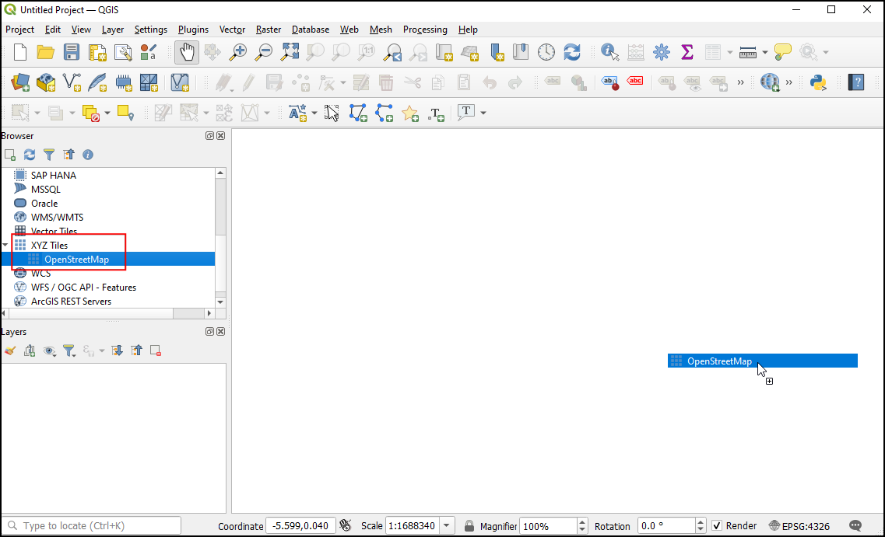
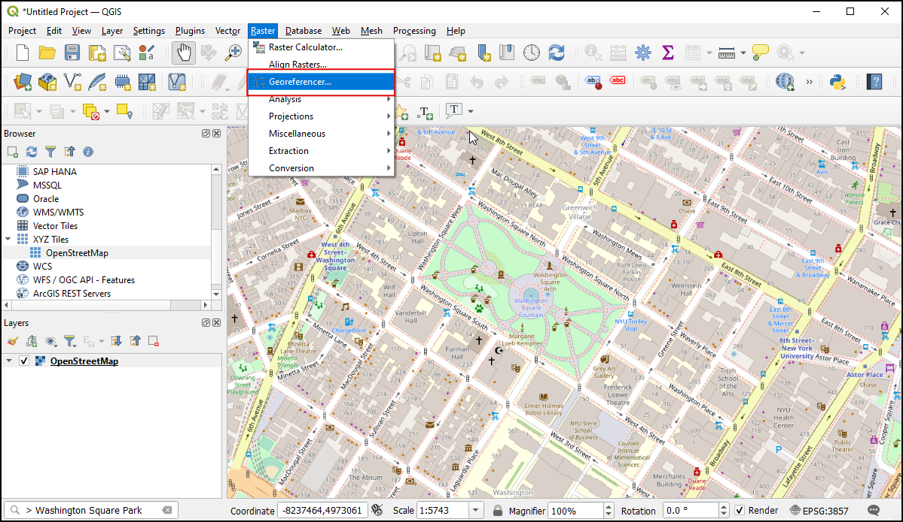
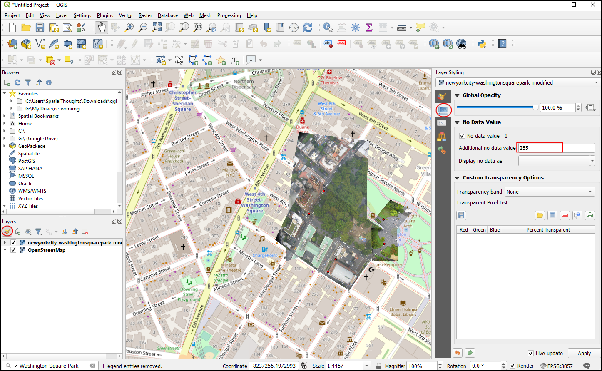

항공사진 지오레퍼런싱 (QGIS3)¶
In the tutorial Georeferencing Topo Sheets and Scanned Maps (QGIS3), we covered the basic georeferencing process in QGIS. That method involved reading the coordinates from your scanned map and entering them manually as control points. Many times though, you may not have the coordinates printed on your map, or you are trying to georeference an image. In that case, you can use another georeferenced data source as your input. This tutorial will teach you how to use existing open data sources in your georeferencing process.
작업 개요¶
We will georeference a high resolution balloon-imagery using reference coordinates from OpenStreetMap.
배워야 할 다른 기술¶
Using XYZ Tile Layers as a Basemap in QGIS.
Using Built-in Nominatim Geocoder.
Setting a user-defined No-Data value for a layer.
데이터 획득¶
In this tutorial, we will be using kite and balloon imagery collected by The Public Laboratory. They make the georeferenced versions of the images also available, but we will download a non-georeferenced JPG image and go through the process of georeferencing it in QGIS.
Download the JPG image of Washington Square Park, New York. You can right-click the JPG button and choose Save link as….
아래링크를 통해 편리하게 데이터 세트를 내려받을 수 있습니다.
과정¶
OpenStreetMap의베이스 맵을 사용하여 지리 참조를위한 좌표를 캡처합니다. QGIS3는 타일 레이어를 기본적으로 지원합니다. x, y 좌표 격자의 각 확대 / 축소 수준 (z)에 대해 개별 맵 타일을 사용하여 만들어 지므로 일반적으로 ‘XYZ’레이어라고합니다. : guilabel :`브라우저 패널`의 : guilabel :`XYZ Tiles 아래에서``OpenStreetMap ‘’레이어를 찾을 수 있습니다. 레이어를 기본 캔버스로 드래그하십시오. 일단로드되면 오른쪽 아래 코더에서이 레이어의 좌표계 (CRS)를 확인하십시오. ``EPSG 3857 Pseudo Mercator ‘’로 설정되어 있습니다. 지리 참조 중에이 레이어에서 추론하는 좌표가이 CRS에 있기 때문에 이것은 중요합니다.

참고
XYZ 레이어 및 QGIS에 다른베이스 맵을 추가하는 방법에 대한 자세한 내용은`이 페이지 <https://www.spatialbias.com/2018/02/qgis-3.0-xyz-tile-layers/>`_를 참조하십시오.
The image we are georeferencing is for
Washington Square Park, New York. You can zoom/pan to locate this park on the map. But that is cumbersome and not practical. From QGIS version 3.20 onwards, there is built-in support for the OpenStreetMap based Nominatim Geocoder. Click the search bar in the bottom left of the QGIS window. To use this as a geocoder prefix, the search place with>. Searching for> Washington Square Parkwill pop up a list of addresses to choose from. Click the first address.

The map canvas will be centered to the Square Park. Now let’s start georeferencing. Launch the Georeferencer from .
참고
From QGIS versions 3.26 onwards, the Georeferencer can be launched from .
For georeferencing an aerial image, we have to choose coordinate points from the OpenStreetMap, so let’s first dock the Georeferencer tool into to main QGIS window. Select Configure Georeference from .

Check Show georeferencer window docked and click OK.

The Georeferencer window will be docked at the bottom of the main QGIS window. Let us load the image file by clicking the Open Raster icon in the Georeferencer window and navigating to the downloaded JPG file. Click Open.

Before adding Ground Control Points (GCP), we need to define the Transformation Settings. Click on the Transformation Settings icon to open the Transformation Settings dialog. Choose the Transformation type as
Polynomial 2. See QGIS Documentation to learn about different transformation types and their uses. As noted earlier, our base map is inEPSG 3857 Pseudo MercatorCRS, so set that as the Target CRS. You can leave the Output raster name to the default and chooseLZWas the Compression. Check the Use 0 for transparency when needed. Check the Save GCP points to store the points as a separate file for future purposes. Make sure the Load in QGIS when done option is checked. Click OK.

Now click on the Add Point button on the toolbar and select an easily identifiable location on the image. Corners, intersections, poles etc., make good control points. Once you click on the image at a control point location, you will see a pop-up asking you to enter map coordinates. Click the button From map canvas.

In the
OpenStreetMaplayer, click on the exact location in the reference layer. The coordinates will be auto-populated from your click on the map canvas. Click Ok.

참고
Tip: When selecting a GCP on a building, always choose the bottom of the building. Most aerial and satellite imagery have leaning buildings, so picking a point on the rooftop will introduce errors.
Similarly, choose at least 6 points on the image and add their coordinates from the reference layer. Once you have added the minimum number of points required for the transform, you will notice that the GCPs now have non-zero
dX,dY, andResidualerror values. If a particular GCP has unusually high error values, that usually means a human error in entering the coordinate values. So you can delete that GCP and capture it again.

Once you are satisfied with the GCPs, click Start georeferencing. This will start the process of warping the image using the GCPs and creating the target raster. Once the process is finished, you will see the layer loaded in QGIS. Close the Georeferencer window.

{kind=link}
Now click on the Open layer styling panel icon and Switch to the Transparency tab. Add
255as the Additional no data value. This will remove the white border around the image. Now you will see your georeferenced image nicely overlaid on the base layer.

참고
8 비트 이미지에는 0-255 범위의 픽셀 값이 있습니다. 0은 검은 색이고 255는 흰색입니다.